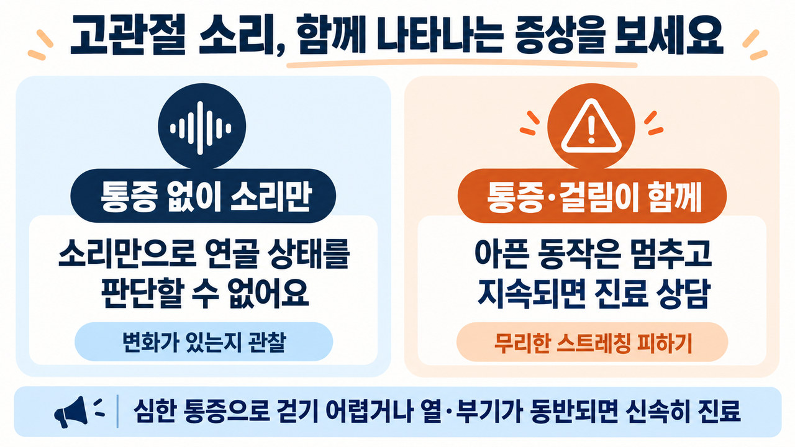
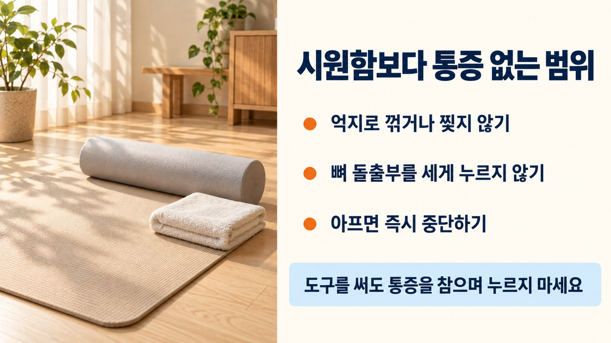

"이 포스팅은 네이버 쇼핑 커넥트 활동의 일환으로, 판매 발생 시 수수료를 제공받습니다."
소리와 뻐근함이 함께 느껴지는지 스스로 확인해보는 관찰 장면
출근길 계단을 오르내리거나 소파에서 일어설 때, 골반 언저리에서 '뚝' 하고 튕기는 소리 때문에 깜짝 놀라신 경험이 있으신가요?
뻐근함이 찾아오면 나도 모르게 다리를 힘껏 벌려 소리를 유도하며 풀려고 하지만, 이런 자극이 관절 건강에는 부담이 될 수 있습니다.
의자를 짚고 서서 걸음을 옮길 때 서혜부 반응을 체크하는 모습
발걸음을 옮길 때 생기는 소리는 두터운 힘줄이 단단한 뼈 표면을 미끄러지듯 스쳐 지나가며 나는 경우가 흔합니다.
걸음을 옮기실 때 뚝 소리가 나더라도 사타구니 부근에 별다른 통증이 동반되지 않는다면, 이는 단단한 뼈 표면을 힘줄이 스쳐 지나가며 발생하는 단순한 마찰음일 확률이 높습니다.

그러나 소리만으로 연골 상태를 확정적으로 판단할 수는 없으므로, 불편함이 느껴질 때는 억지로 소리를 내지 말고 일상에서 무리하지 않고 짧게 시도해보는 예시 루틴으로 부드럽게 이완해 주시는 것이 좋습니다.

통증 없는 단순 소리와 통증·걸림이 동반되는 신호의 감별 비교표
골반 소켓 둘레를 둥글게 감싸고 있는 비구순 섬유 연골은 체중이 실릴 때 훌륭한 완충 작용을 맡아줍니다.
골반 바깥이 찰칵거리든 사타구니 안쪽이 묵직하든, 아픈 부위는 어디까지나 상태를 짐작해보는 참고 단서일 뿐입니다. 우리 스스로 느낌만 믿고 '단순 힘줄이겠지'라거나 '연골이 다쳤구나' 하고 예단해서는 곤란합니다.

전문의의 꼼꼼한 촉진과 진찰을 거치고, 필요할 때 방사선 검사 등을 함께 맞춰보아야 제대로 된 원인을 가려낼 수 있습니다.
바닥에 편안히 누워 무릎 뒤쪽을 잡고 부드럽게 당겨주는 1단계 동작
개인별 통증이 없는 편안한 범위 내에서 골반 주변 근육을 부드럽게 풀어주는 3단계 예시 동작을 소개합니다.
1단계는 등을 대고 누운 채 당기는 다리의 무릎이나 허벅지 뒤편을 살포시 안아 가슴 쪽으로 끌어당기는 방법으로, 아프지 않은 선에서 숨을 고르며 10~15초 안팎 가볍게 유지해 줍니다.
다리를 숫자 4 모양으로 접어 올려 둔부 깊숙한 곳의 뻐근함을 풀어주는 2단계 모습
2단계는 한쪽 발목을 다른 쪽 무릎에 걸쳐 다리 모양을 숫자 4로 만든 다음, 바닥에 닿은 쪽 허벅지 뒷면을 양손으로 모아 쥐어 가슴으로 당겨주며 10~15초 안팎 엉덩이 주변이 부드럽게 당기는 느낌을 확인하며 머물러 줍니다.
한쪽 무릎을 바닥에 짚고 골반 앞쪽을 지그시 펴주는 3단계 하프 런지 장면
3단계는 한쪽 무릎을 바닥에 받치고 상체를 반듯하게 세우는 하프 런지 자세인데, 이때 허리가 젖혀지지 않도록 배에 긴장을 유지하며 골반을 앞쪽으로 지그시 밀어 10~15초 안팎 부드럽게 늘려줍니다.

만약 동작을 따라 하다가 앞쪽이 찌릿하거나 찝히는 불쾌감이 든다면 우선 움직임의 각도를 좁혀보시고, 조절한 뒤에도 아픔이 가시지 않는다면 억지로 참지 말고 곧바로 동작을 멈추셔야 관절을 보호할 수 있습니다.
아울러 이 동작들은 바닥에 눕거나 한쪽 무릎을 바닥에 짚는 자세가 기본이 됩니다. 마룻바닥이나 얇은 요 위에서 맨몸으로 진행하시면 무릎이나 꼬리뼈 주변이 배길 수 있고 관절에 불필요한 긴장이 들어갈 수 있습니다. 몸의 하중을 부드럽게 받쳐주는 쿠션감과 밀착력 있는 홈트 전용 매트를 깔아두고 하시면 한결 안락하게 동작에만 집중하실 수 있습니다.
🧘 바닥 배김을 줄이고 관절을 받쳐주는 홈트 매트
딱딱한 바닥으로부터 꼬리뼈와 무릎 관절을 보호하며, 쿠션감과 밀착력을 갖춘 매트를 선택하시면 한결 편안하게 동작에 집중할 수 있습니다.
요가매트 제품 둘러보기 >

소도구 사용 시 뼈 돌출부 압박을 피하고 통증 없는 범위를 지키는 안전 수칙
골반이 시원하게 열리길 바라는 마음에 180도 개구리 자세를 무작정 따라 하시는 분들이 계십니다.
골반을 유연하게 만들겠다며 무작정 다리를 벌리거나 180도 개구리 동작을 억지로 시도하면, 본인의 고유한 가동 영역을 초과하면서 소켓 둘레의 섬유성 연골에 지나친 압력이 가해질 수 있습니다.

관절을 억지로 비틀지 않고 폼롤러로 허벅지 옆선과 엉덩이 근육 결을 가볍게 문질러 주면 뻐근하게 굳었던 긴장감을 덜어내는 데 도움을 받을 수 있습니다.
손으로 굳은 둔부나 허벅지를 주무르다 보면 쉽게 피로해질 수 있습니다. 이럴 때 가벼운 폼롤러를 활용해 체중과 압력을 스스로 조절하며 굴려주시면 뭉친 부위를 한결 부드럽게 달래줄 수 있습니다.
다만 골반 옆으로 툭 튀어나온 대전자 뼈나 아픈 부위를 체중을 실어 세게 짓누르면 점액낭에 자극이 갈 수 있으므로, 단단한 뼈를 피해서 말랑한 근육 위주로 천천히 굴려주셔야 합니다.
💆 굳은 하체 근육을 부드럽게 풀어주는 폼롤러
체중과 압력을 조절하며 허벅지 바깥쪽과 엉덩이 주변 근육의 긴장을 가볍게 달래줄 때 편리하게 활용할 수 있는 소도구입니다.
폼롤러 제품 둘러보기 >
진료 상담 전 어떤 동작에서 소리와 뻐근함이 생기는지 기록하는 장면
단순 피로로 인한 뻐근함은 며칠 쉬어주면 나아지지만, 다음과 같은 상황에서는 혼자 참지 말아야 합니다.
한쪽 발로 서거나 디딜 때 하중을 버티지 못할 정도로 쑤시거나, 관절 속에서 무언가 덜컥 걸려 다리가 펴지지 않는 잠김 신호가 관찰된다면 혼자서 운동하지 마시고 지체 없이 정형외과 전문의를 찾아가셔야 합니다.

넘어지거나 부딪힌 적이 없더라도 발을 딛지 못할 정도로 극심한 통증이 밀려오거나, 관절 주변이 후끈거리며 빨갛게 부어오를 때, 혹은 열과 오한이 함께 찾아온다면 일반 진료를 기다릴 것이 아니라 지체 없이 응급 진료를 받으셔야 합니다.
진료를 받으러 가시기 전에는 어떤 자세를 취할 때 통증이 시작되는지 메모해 두시면 훨씬 정밀한 상담에 도움이 됩니다.

🍯 함께 읽으면 좋은 꿀단지 매거진

📚 참고 자료 및 공인 가이드라인
• 대한정형외과학회 고관절 일반인 건강정보 (골관절염 및 충돌증후군 안내)
• Warwick FAI syndrome 국제 합의문 (2016)
• 발음성 고관절 및 힘줄 탄발음 문헌 종설 (2010)
• 영국 국민보건서비스(NHS) 성인 고관절 통증 안내